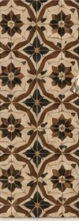
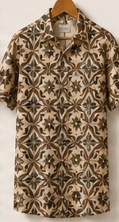

Moda patrimonial brasileira
Brasil que se usa.
Arte que se vive.
A Reveste transforma azulejos, ladrilhos e revestimentos históricos em estampas para camisas e camisetas. Conheça a identidade da marca e as coleções.
Como a Reveste cria
Do lugar à peça
Cada estampa parte de um revestimento histórico, o piso de uma igreja, uma fachada, uma calçada, e vira uma camisa que se veste com significado.
Ver a coleção Ladrilhos de Cerâmica- 1 · Lugar O piso da igreja
-

2 · Estampa O padrão redesenhado -

3 · Peça A camisa Reveste
Manual de identidade visual
Explore o manual

A Essência da Marca
Patrimônio que se veste
A parede guarda a história do Brasil.
A Reveste a coloca em movimento.
Do piso de uma igreja à calçada do subúrbio, cada estampa leva um revestimento brasileiro da parede para o corpo.
Transformar a riqueza dos azulejos, ladrilhos e revestimentos históricos do Brasil em peças de vestuário únicas, promovendo a valorização do patrimônio e a conexão territorial.
Ser a referência em moda que celebra o patrimônio e a cultura brasileira, resgatando histórias através da arte que se usa.
Nossos Valores
-
Herança Cultural
Cada estampa parte de um revestimento que faz parte da história do Brasil.
No manual: Cada peça informa se o nome é homenagem ou reinterpretação.
-
Originalidade
A Reveste redesenha a referência; não copia a obra.
No manual: As estampas são autorais e não reproduzem painéis de artistas.
-
Qualidade
Peças pensadas para durar, como os revestimentos que as inspiram.
No manual: Cores de impressão e tecido definidas por perfil e referência Pantone.
-
Conexão Territorial
Cada coleção carrega a memória de um lugar e de quem o construiu.
No manual: Cada peça traz a cidade e o estado da sua referência.
-
Artesanal
Valoriza o feito à mão, do azulejo pintado ao piso de caquinhos.
No manual: O glossário explica cada técnica de revestimento.
Para quem é este manual
- Parceiros e fornecedores que aplicam a marca em peças, tags e embalagens.
- Gráficas e estamparias que precisam de arquivos e cores de impressão.
- Imprensa e redes sociais que divulgam a Reveste.
- A equipe da Reveste, como referência única.
Como usar este manual
- Baixe o kit da marca na aba Logo e Usos.
- Escolha a versão na tabela Qual arquivo usar.
- Confira as cores de impressão e o tamanho mínimo.
- Ficou dúvida? Fale com a Reveste.
"Brasil que se usa. Arte que se vive."
Slogan oficial da marcaLogo Principal
Um mosaico de histórias
A logo é composta por um ícone modular em grade 2×2 e o nome da marca. Cada módulo representa um elemento do patrimônio brasileiro, reunidos em um símbolo coeso.
Design em grade 2×2 que permite representar múltiplos elementos do patrimônio brasileiro em um único ícone coeso.
Equilíbrio entre as versões vertical (presença de marca) e horizontal (cabeçalhos e espaços reduzidos).
Geometria limpa e tipografia clássica para que a marca permaneça relevante e sofisticada.
Qual arquivo usar
| Onde vai aplicar | Versão | Formato |
|---|---|---|
| Site, redes sociais, apresentações | Logo horizontal ou vertical | SVG (ou PNG) |
| Fundo escuro ou foto | Versão negativa | SVG (ou PNG) |
| Gráfica: cartão, tag, embalagem | Logo ou selo | PDF vetorial |
| Etiqueta e tamanhos pequenos | Sem tagline | PDF ou SVG |
| Bordado, carimbo, gravação, serigrafia | Ícone em 1 cor | PDF ou SVG |
| Avatar e favicon | Ícone | PNG |
Todas as versões em SVG, PDF e PNG, com as cores de impressão e as regras de uso (LEIA-ME).


Vetores com os textos convertidos em contorno: não é preciso instalar fontes. Os PNG têm 2000 px de largura e fundo transparente.
Construção da Marca
Elementos simbólicos do ícone
O ícone é construído a partir de quatro elementos visuais distintos, cada um representando um aspecto da inspiração da marca.

Letra R
Representa a identidade e o reconhecimento imediato da marca Reveste, unindo o nome ao símbolo.

Azulejo Português
Homenagem à herança colonial e artística que fundamenta a estética das nossas coleções.

Ladrilho Histórico
Celebração dos padrões geométricos e da riqueza visual dos ladrilhos hidráulicos brasileiros.

Janela Colonial
Evoca a arquitetura histórica e a conexão profunda com o passado e a memória do Brasil.
Diretrizes de Uso
Uso e preservação
Para preservar a integridade da marca e fortalecer seu reconhecimento, siga as diretrizes abaixo em todas as aplicações.
Integridade Formal
Não distorcer a marca; sempre redimensionar proporcionalmente.
Fidelidade Cromática
Usar apenas as cores oficiais; evitar gradientes e efeitos.
Contraste e Leitura
Garantir contraste adequado; em fundos escuros, usar a versão negativa.
Área de Proteção
Espaço livre mínimo em volta da logo: ¼ do lado do ícone (veja o diagrama).
Área de Proteção
x = ¼ do lado do ícone, ou metade de uma célula da grade 2×2.
Deixe esse espaço livre em todos os lados: nenhum texto, imagem ou borda pode entrar na área tracejada. Vale para todas as versões, inclusive o selo.
Tamanho Mínimo
| Versão | Impresso | Tela |
|---|---|---|
| Logo vertical com tagline | 57 mm | 283 px |
| Logo horizontal com tagline | 72 mm | 358 px |
| Logo vertical sem tagline | 20 mm | 100 px |
| Logo horizontal sem tagline | 25 mm | 120 px |
| Ícone | 8 mm | 24 px |
| Selo Patrimonial | 25 mm (diâmetro) | 120 px |
Medidas pela largura. Abaixo do mínimo com tagline, use a versão sem tagline: a tagline deixa de ser legível.
Usos Incorretos
Paleta de Cores
Elegância e tradição
A paleta foi cuidadosamente selecionada para transmitir elegância, sofisticação e a riqueza cultural brasileira — sustentada por dois tons essenciais.
Azul Colonial
Representa a profundidade histórica, a nobreza dos azulejos clássicos e a sofisticação da marca.
- RGB
- CMYK couché
- CMYK sem revestimento
- Pantone tecido
- Pantone gráfico
Off-White
Evoca a naturalidade das matérias-primas e o aspecto artesanal, proporcionando o contraste ideal para a leitura.
- RGB
- CMYK couché
- CMYK sem revestimento
- Pantone tecido
- Pantone gráfico
- usar CMYK ou papel natural
CMYK calculado pelos perfis de impressão FOGRA39 (papel couché) e FOGRA52 (papel sem revestimento). Os Pantone são os mais próximos das cores da marca (Azul Colonial: 19-4029 TCX Navy Peony, diferença ΔE 2,2; 540 C, ΔE 3,0. Off-White: 11-0103 TCX Egret, ΔE 1,0). Confirme no guia físico Pantone e peça prova impressa antes da primeira tiragem; para as camisas, use a referência TCX com a estamparia.
Cores de interface (só no site, não usar em peças da marca)
- Azul Noite #14283F · rodapé do site
- Vermelho Alerta #B23A3A · marcação de uso incorreto
Tipografia
Sofisticação em cada detalhe
A tipografia complementa a identidade com elegância e legibilidade, equilibrando a tradição da serifa com a clareza do sans-serif.
Primária · Títulos e logo
Aa
Playfair Display
ABCDEFGHIJKLMNOPQRSTUVWXYZ
abcdefghijklmnopqrstuvwxyz
0123456789 · áãçéêõú
- Regular 400
- Bold 700
- Itálico 400
Serifa de alto contraste: elegância e um toque clássico que remete à história.
Secundária · Corpo de texto
Aa
Lato
ABCDEFGHIJKLMNOPQRSTUVWXYZ
abcdefghijklmnopqrstuvwxyz
0123456789 · áãçéêõú
- Light 300
- Regular 400
- Bold 700
Sans-serif humanista: clareza e boa leitura em textos longos e em tela.
Hierarquia
Fontes de apoio
Materiais impressos
Herança que inspira, design que perpetua.
Cormorant Garamond · lookbooks, tags e impressos.
Digital e e-commerce
Fichas de produto e descrições.
EB Garamond · textos de produto em loja virtual.
Previstas no manual original para usos específicos; o site usa só Playfair Display e Lato. As fontes de apoio só são baixadas quando esta seção aparece.
Aplicação · Produto
As coleções Reveste
A identidade ganha vida nas estampas: cada coleção traduz um capítulo do patrimônio brasileiro em camisas e camisetas que se vestem com significado.
Explore por coleção
Glossário
- Azulejo
- Placa de cerâmica vidrada, pintada à mão ou estampada, trazida de Portugal a partir do século XVI.
- Ladrilho hidráulico
- Peça de cimento e pigmento, prensada e curada na água, sem forno; comum em pisos dos séculos XIX e XX.
- Caquinho
- Revestimento feito à mão com cacos de azulejo, louça ou cerâmica.
- Homenagem
- Nome de peça criado pela Reveste, inspirado num tipo de lugar ou cidade; não é um imóvel ou obra real.
- Reinterpretação
- Estampa inspirada num lugar, devoção ou técnica real, redesenhada pela Reveste; não reproduz a obra.
As imagens das coleções são ilustrações de apresentação, não fotos de produto nem registros documentais dos lugares.
Revisão curatorial Luan Crespo · Departamento de Patrimônio Histórico · revisado em 3 de outubro de 2026
Futuro da Marca
Uma marca pronta para o futuro
A identidade visual da Reveste não é apenas um conjunto de símbolos, mas a base para uma narrativa que honra o passado e veste o presente. Estamos prontos para expandir a herança cultural brasileira para o mundo.

Herança que inspira,
design que perpetua.
Para dúvidas ou solicitações de materiais da marca, entre em contato com a equipe de marketing da Reveste.
Encontrou uma informação patrimonial incorreta (nome, lugar, autoria)? Envie uma correção.
REVESTE.COM.BR